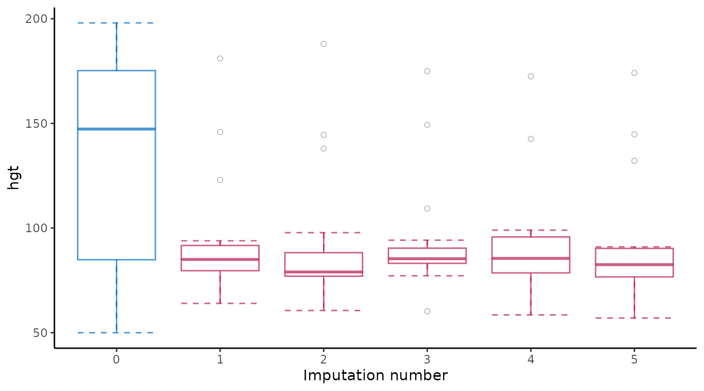
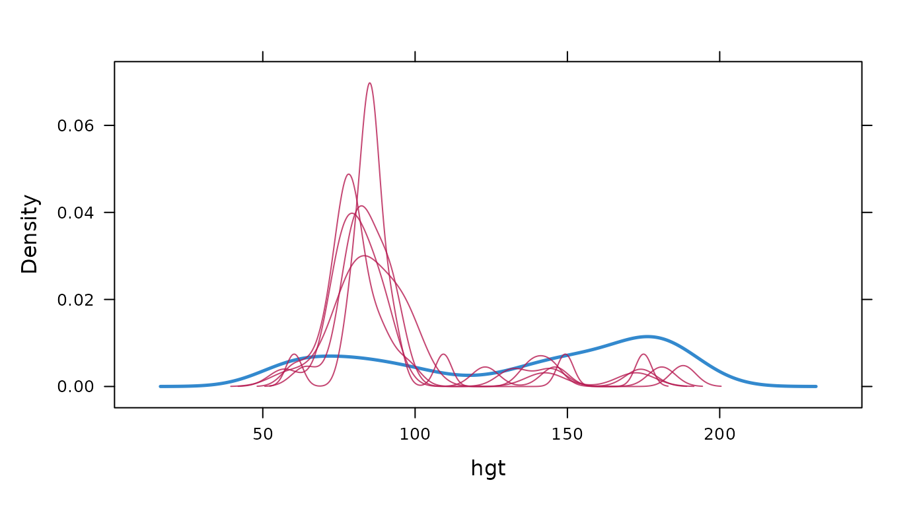
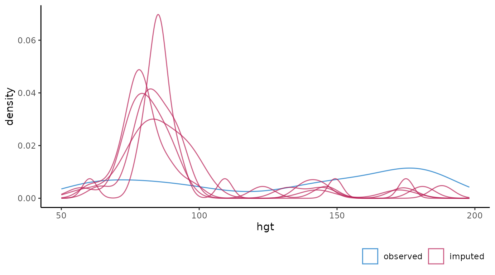
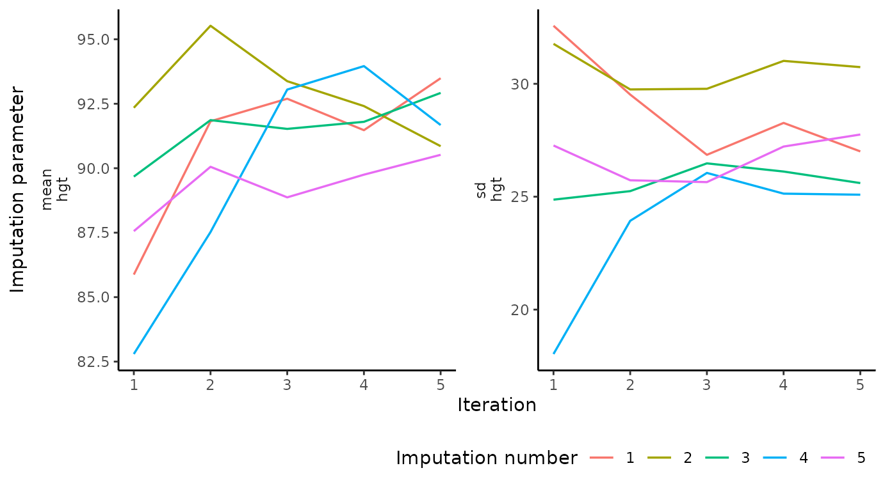
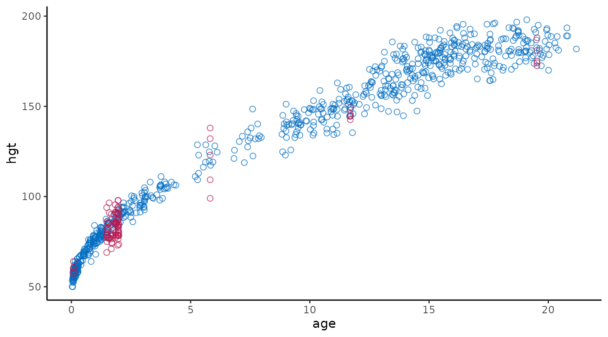

Create the ggmice equivalent of mice plots
How to re-create the output of the plotting functions from mice with ggmice. In alphabetical order of the mice functions.
First load the ggmice package, some incomplete data and a mice::mids object into your workspace.
bwplot
Box-and-whisker plot of observed and imputed data.
# original plot
mice::bwplot(imp, bmi ~ .imp)
# ggmice equivalent
ggmice(imp, ggplot2::aes(x = .imp, y = bmi)) +
ggplot2::geom_boxplot() +
ggplot2::labs(x = "Imputation number")
# extended reproduction with ggmice
ggmice(imp, ggplot2::aes(x = .imp, y = bmi)) +
ggplot2::stat_boxplot(geom = 'errorbar', linetype = "dashed") +
ggplot2::geom_boxplot(outlier.colour = "grey", outlier.shape = 1) +
ggplot2::labs(x = "Imputation number") +
ggplot2::theme(legend.position = "none")
densityplot
Density plot of observed and imputed data.
# original plot
mice::densityplot(imp, ~bmi)
# ggmice equivalent
ggmice(imp, ggplot2::aes(x = bmi, group = .imp)) +
ggplot2::geom_density() 
# extended reproduction with ggmice
ggmice(imp, ggplot2::aes(x = bmi, group = .imp, size = .where)) +
ggplot2::geom_density() +
ggplot2::scale_size_manual(values = c("observed" = 1, "imputed" = 0.5),
guide = "none") +
ggplot2::theme(legend.position = "none")
fluxplot
Influx and outflux plot of multivariate missing data patterns.
# original plot
mice::fluxplot(dat)
# ggmice equivalent
plot_flux(dat)
md.pattern
Missing data pattern plot.
# original plot
md <- mice::md.pattern(dat)
# ggmice equivalent
plot_pattern(dat)
# extended reproduction with ggmice
plot_pattern(dat, square = TRUE) +
ggplot2::theme(legend.position = "none",
axis.title = ggplot2::element_blank(),
axis.title.x.top = ggplot2::element_blank(),
axis.title.y.right = ggplot2::element_blank())
plot.mids
Plot the trace lines of the MICE algorithm.
# original plot
plot(imp, bmi ~ .it | .ms)
# ggmice equivalent
plot_trace(imp, "bmi")
stripplot
Stripplot of observed and imputed data.
# original plot
mice::stripplot(imp, bmi ~ .imp)
# ggmice equivalent
ggmice(imp, ggplot2::aes(x = .imp, y = bmi)) +
ggplot2::geom_jitter(width = 0.25) +
ggplot2::labs(x = "Imputation number")
# extended reproduction with ggmice (not recommended)
ggmice(imp, ggplot2::aes(x = .imp, y = bmi)) +
ggplot2::geom_jitter(
shape = 1,
width = 0.1,
na.rm = TRUE,
data = data.frame(
bmi = dat$bmi,
.imp = factor(rep(1:imp$m, each = nrow(dat))),
.where = "observed"
)
) +
ggplot2::geom_jitter(shape = 1, width = 0.1) +
ggplot2::labs(x = "Imputation number") +
ggplot2::theme(legend.position = "none")
xyplot
Scatterplot of observed and imputed data.
# original plot
mice::xyplot(imp, bmi ~ age)
# ggmice equivalent
ggmice(imp, ggplot2::aes(age, bmi)) +
ggplot2::geom_point()
# extended reproduction with ggmice
ggmice(imp, ggplot2::aes(age, bmi)) +
ggplot2::geom_point(size = 2, shape = 1) +
ggplot2::theme(legend.position = "none")